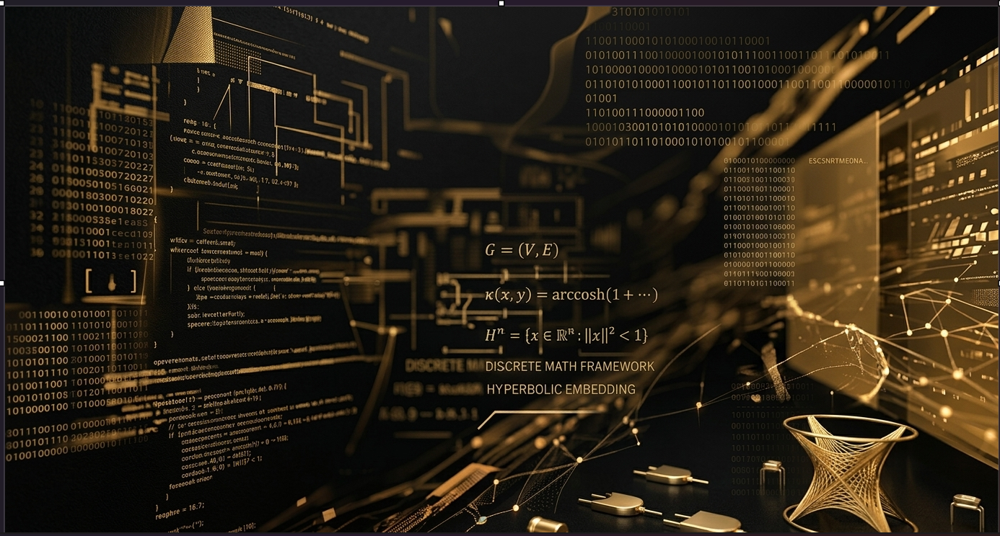

03
RheoLogosbuilding
A double-entry payment ledger with an event-driven outbox, an idempotent consumer, and a dead-letter queue. Kafka and Redis run alongside the app, Postgres is managed.
KotlinSpring BootKafkaPostgres
My entry into software wasn't through a standard computer science pipeline; it was forged through discrete mathematics and military service. That background shaped how I approach engineering: structure first, absolute clarity on edge cases, and zero reliance on off-the-shelf abstractions when performance and data integrity are on the line.
I work primarily at the intersection of low-level systems, distributed reliability, and applied mathematics. Whether I am hand-writing zero-copy parsers in Rust, engineering network diagnostics in Go, or researching belief manifolds for AI memory architectures, my baseline requirement is the same: complete visibility into every layer of the execution stack.
I don't hide the learning curve or pretend to have all the answers upfront. I dive into complex, uncharted domain space, map the mathematical boundaries, build the solution from first principles, and own the results.
A project manager that also tracks issues, not the other way around. Built to stay low bloat instead of turning into another Jira.
Graph neural network PDE solvers for computational fluid dynamics. The dashboard shows real validation output, including the fix for a spectral radius blow-up in autoregressive rollouts.
A double-entry payment ledger with an event-driven outbox, an idempotent consumer, and a dead-letter queue. Kafka and Redis run alongside the app, Postgres is managed.
An enterprise identity gateway speaking SAML, OIDC, SCIM, and ABAC to each other, against a working demo tenant.
Flags categorical slices of a dataset where the trend reverses against the overall trend, the shape Simpson's paradox leaves behind.
A local-first document vault. Desktop only, so this one gets a walkthrough video instead of a link once it's recorded.
Diagnoses and fixes cross-cloud network conflicts: overlapping CIDR ranges, inconsistent private networking, DNS resolving differently across AWS, GCP, and Azure. Built alone, under production pressure, to fix a real outage.
Detects instructions embedded in content headed for an LLM or agent, and traces where they actually came from before anything acts on them.

structure first, edge cases mapped